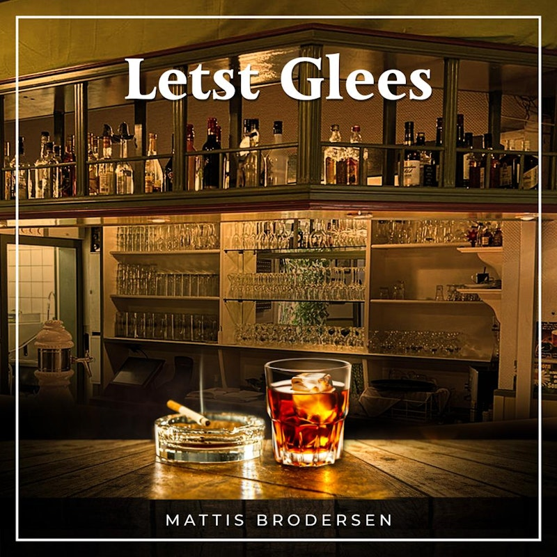

Die Nordseeinsel Föhr ist ganzjährig ein attraktives Reiseziel mit einem abwechslungsreichen Freizeit- und Veranstaltungsprogramm. Starten Sie auf Föhr doch mal mit Schwung in den Frühling. Mit den ersten warmen Sonnenstrahlen erwacht die Natur in leuchtenden Farben und lädt zu Fahrradtouren auf den langen Radwegen ein. Auch die Ankunft vieler Vogelarten ist dann nicht mehr fern. Oder Sie genießen Ihren Familienurlaub im Sommer beschaulich im Strandkorb, spüren den feinen Sand unter Ihren Füßen, lassen den Blick über die wunderschöne Nordsee schweifen und beobachten Ihre Kinder vergnügt beim Buddeln und Plantschen. Wer es aktiver mag, lernt auf Föhr Wind- oder Kitesurfen, geht golfen oder reiten. Wenn Sie es eher ruhiger und beschaulicher mögen, köstliche Gaumenfreuden und ein kulturelles Veranstaltungsprogramm suchen, dann ist der Herbst auf Föhr wie für Sie gemacht. Zauberhaft ist auch die Winterzeit auf der Insel Föhr! Atmen Sie bei einem Strandspaziergang tief durch und spüren Sie die Frische der salzhaltigen Seeluft. Anschließend wärmen ausgiebige Saunagänge den Körper wieder auf und versprechen ein wohliges Gefühl – Wellness pur!

Letst Glees
Mattis Brodersen
AVAILABLE NOVEMBER 3, 2023